Hilfe und Support
In drei Fenstern können Sie einen Begriff aus LemmaLoom nachschlagen, sich an den Entwickler wenden und LemmaLoom zitieren. Zwei davon finden Sie im Menü Hilfe, eines im Menü LemmaLoom:
| Befehl | Was er öffnet |
|---|---|
| Hilfe ▸ Glossar | Kurze Definitionen der Begriffe und Bezeichnungen in LemmaLoom, mit einem Suchfeld |
| Hilfe ▸ Feedback senden | Ein Fenster für einen Fehlerbericht, einen Funktionswunsch oder eine Frage, aus dem eine E-Mail in Ihrem Mailprogramm wird |
| LemmaLoom ▸ Über LemmaLoom | Die Versions- und die Build-Nummer, Literaturangaben im MLA- und im APA-Stil und die Lizenzen der Komponenten, die LemmaLoom enthält |
Alle drei Befehle öffnen ein eigenes Fenster neben dem Hauptfenster. Ist das Fenster bereits geöffnet, aktiviert ein erneuter Aufruf des Befehls das vorhandene Fenster.
Alle Beispiele gehen vom Projekt „Klimadebatte“ aus, das unter Das Beispielprojekt in Kapitel 1, Einführung beschrieben ist; um die Befehle selbst auszuprobieren, importieren Sie es mit Ablage ▸ Importieren ▸ Beispielprojekt.
Das Menü „Hilfe“
Ganz oben im Menü Hilfe fügt macOS ein Suchfeld hinzu, das die Namen der Befehle von LemmaLoom in den Menüs durchsucht. Suchen Sie etwa nach Aktivität, erscheint Aktivität unter den Vorschlägen im Suchergebnis. Wenn Sie den Mauszeiger darauf halten, öffnet sich das Menü Fenster und zeigt Ihnen, wo sich der Befehl befindet. ⌘? (auf einer deutschen Tastatur ⇧⌘ß, auf einer US-Tastatur ⇧⌘/) öffnet dieses Suchfeld im Menü Hilfe.
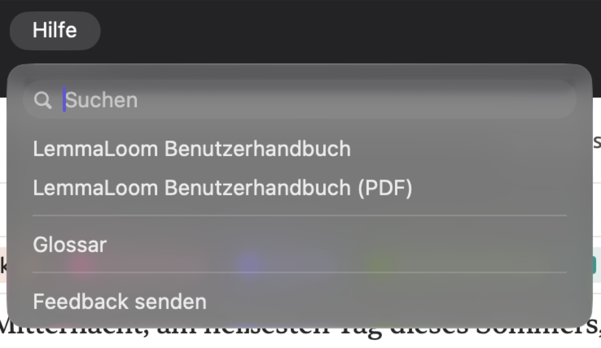
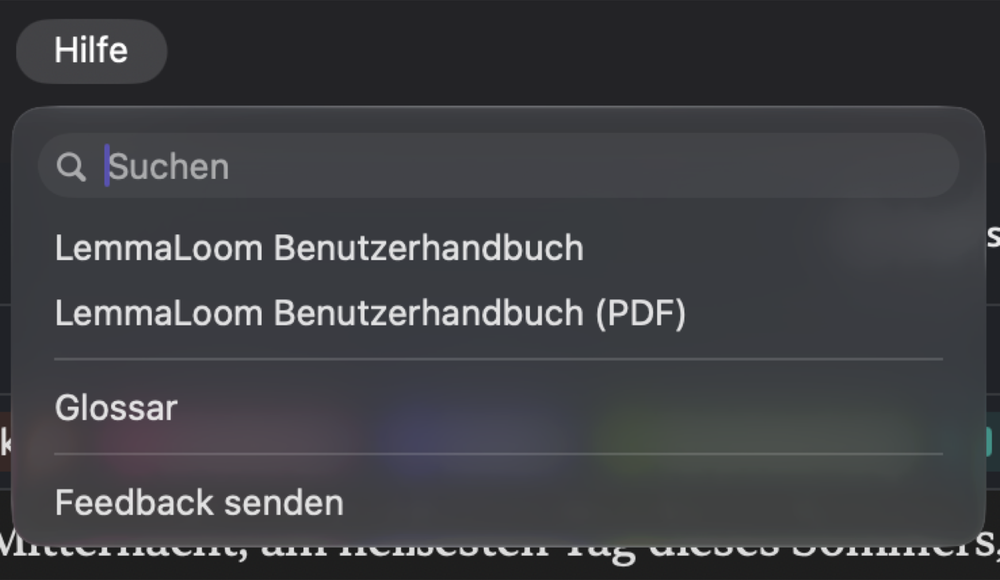
Das Glossar
Das Glossar definiert das Vokabular der qualitativen Analyse, etwa Code, Segment und Memo, sowie die Bezeichnungen der Grammatikanalyse. NNS ist zum Beispiel eine Bezeichnung für Substantive im Plural, während nsubj das Substantiv kennzeichnet, das als Subjekt eines Teilsatzes dient. Außerdem erklärt es die Statistiken im Inspektor und die Abkürzungen in der Statusleiste und in den Diagrammen. Sie können das Glossar neben Ihrem Projekt geöffnet lassen.
Jeder Eintrag im Glossar erklärt nur kurz, wofür die Bezeichnung steht.
Das Glossar ist für alle Projekte dasselbe und erscheint immer in der Sprache der Benutzeroberfläche. Bei deutscher Benutzeroberfläche enthält es deutsche Namen und Definitionen, und seine alphabetisch geordneten Kategorien folgen der deutschen Sortierung (siehe Die Sprache der Benutzeroberfläche in Kapitel 24, Einstellungen und Darstellung). Kürzel wie NNS und nsubj bleiben in jeder Sprache der Benutzeroberfläche gleich, denn sie entsprechen den Bezeichnungen, die die Grammatikanalyse tatsächlich verwendet.
Das Fenster „Glossar“
In der Seitenleiste des Glossarfensters finden Sie den Eintrag Alle und darunter zwölf weitere Einträge für die einzelnen Kategorien des Glossars. Bei jeder Kategorie steht, wie viele Begriffe sie enthält. Rechts über den Einträgen befindet sich das Feld Suchen.
Einen Eintrag finden
- Wählen Sie Hilfe ▸ Glossar.
- Klicken Sie in der Seitenleiste auf Alle, um alle Kategorien zu durchsuchen, oder auf eine einzelne Kategorie, um nur dort zu suchen.
- Geben Sie im Feld Suchen ein Wort oder eine Bezeichnung ein, etwa
nsubj.
Die Liste wird schon während der Eingabe kürzer. Die Suche findet jeden Eintrag, dessen Name, Kürzel oder Definition Ihre Eingabe enthält. Groß- und Kleinschreibung spielt dabei keine Rolle, Akzente dagegen schon; um Cramérs V zu finden, ohne das é einzugeben, suchen Sie deshalb nach cram.
Ist Alle ausgewählt, ordnet das Glossar die Einträge nach Kategorien und zeigt beim Scrollen den Namen der aktuellen Kategorie oben in der Liste an. Kategorien ohne Treffer werden ausgelassen. Gibt es überhaupt keinen Treffer, erscheint Keine Treffer. Die Zahlen in der Seitenleiste berücksichtigen die Suche nicht.
Da die Suche auch die Definitionen der Einträge einbezieht, können kurze Suchbegriffe unerwartete Treffer liefern. Wenn Sie Alle auswählen und nach Subjekt suchen, erhalten Sie viele Ergebnisse. Sie stammen aus den meisten Kategorien. Darunter sind die Funktion Subjekt, die Dependenzrelationen für Subjekte, die Phrasenbezeichnung für einen Teilsatz (definiert als ein Subjekt mit seinem Prädikat), das grammatische Merkmal Kasus und der Buchstabe S aus den Satzmustern. Klicken Sie auf eine andere Kategorie, wird die Liste kürzer, der Suchbegriff bleibt aber erhalten. Wenn Sie Dependenzrelationen auswählen und nach demselben Begriff suchen, bleiben sechs Treffer übrig. Vier davon tragen die Kennzeichnung EN ZH (csubj, csubjpass, nsubj und nsubjpass), zwei die Kennzeichnung DE (sb und sbp).
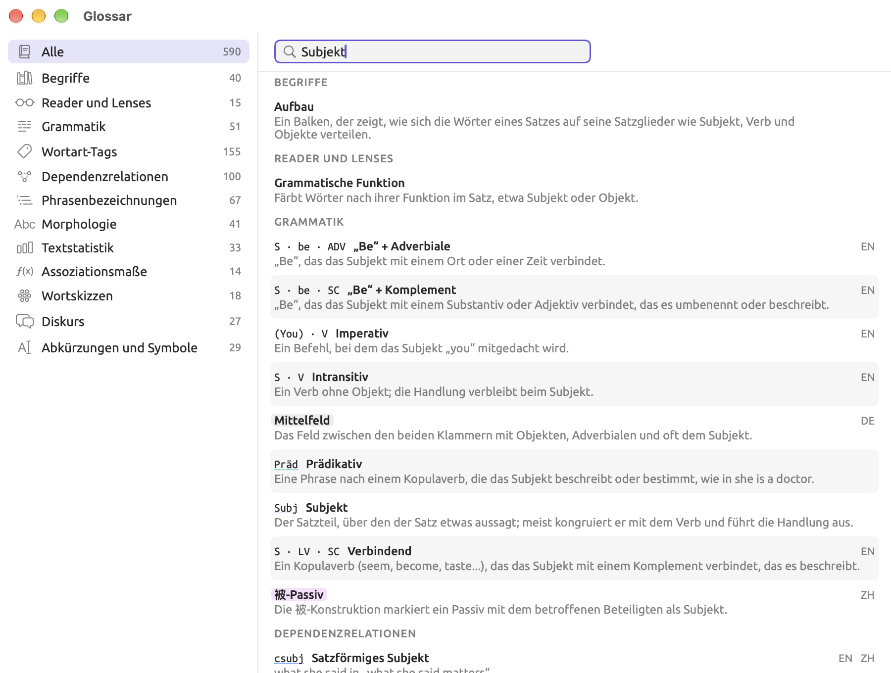
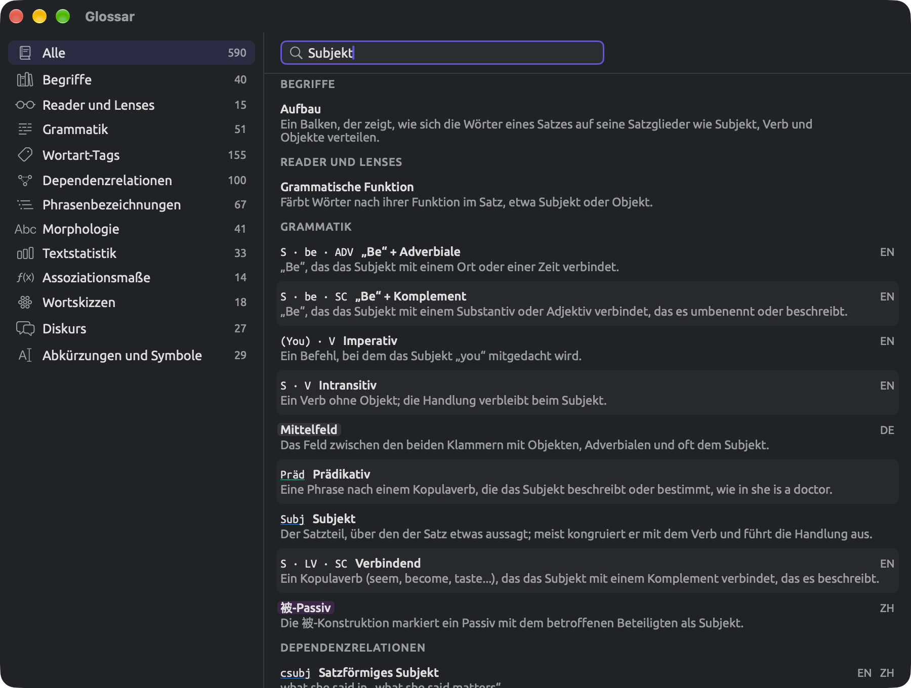
Einen Eintrag lesen
Ein Eintrag besteht aus bis zu vier Teilen:
- Das Kürzel des Eintrags in einer Schrift mit fester Zeichenbreite, etwa
nsubj,MDDoder¶. - Der Name des Eintrags in Fettschrift, etwa Nominales Subjekt.
- Rechts neben Kürzel und Name eine Liste von Abkürzungen für die Sprachen, für die der Eintrag gilt. Die Abkürzungen sind EN für Englisch, DE für Deutsch und ZH für Chinesisch; ist keine Sprache angegeben, gilt der Eintrag für alle drei Sprachen.
- Zuletzt folgt auf den Namen die Definition in normaler Schrift. Bei Tags und Relationen besteht die Definition meist aus einem Beispiel. Die Definition von
nsubjlautet etwa she in „she runs“; das nominale Subjekt she steht also im Teilsatz she runs.
Unter Morphologie zeigt jeder Wert eines grammatischen Merkmals zuerst die genaue Zeichenfolge, die die Grammatikanalyse ausgibt, etwa Number=Plur, und danach den grammatischen Fachbegriff dafür, Plural. Das Merkmal selbst, Number, hat über den Werten einen eigenen Eintrag mit Definition.
Besondere Einträge stehen für etwas, das die Lenses von LemmaLoom automatisch annotieren. Ein solcher Eintrag zeigt sein Kürzel (oder seinen Namen, wenn er kein Kürzel hat) in der Farbe und im Stil dieser Lens. So können Sie eine Farbe direkt einem Begriff zuordnen, den Sie in der Leseansicht hervorgehoben sehen. Halten Sie den Mauszeiger auf das farbige Wort, um den Namen der jeweiligen Lens anzuzeigen. Ändern Sie im Bereich Lenses der Einstellungen die Farbe oder den Stil eines Lens-Aspekts, übernimmt das Glossar diese Anpassung (siehe Der Bereich „Lenses“ in Kapitel 24, Einstellungen und Darstellung).
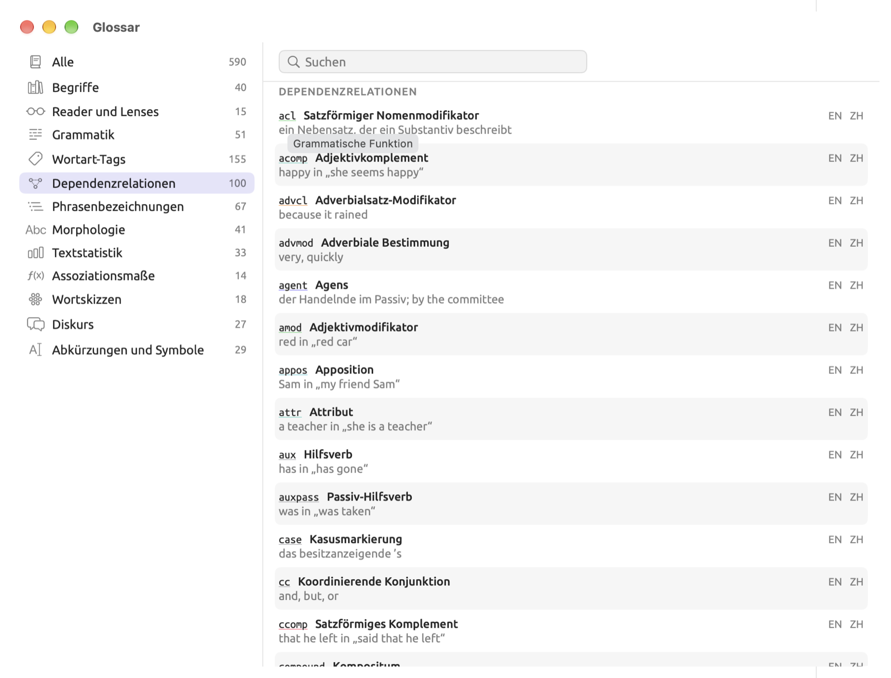
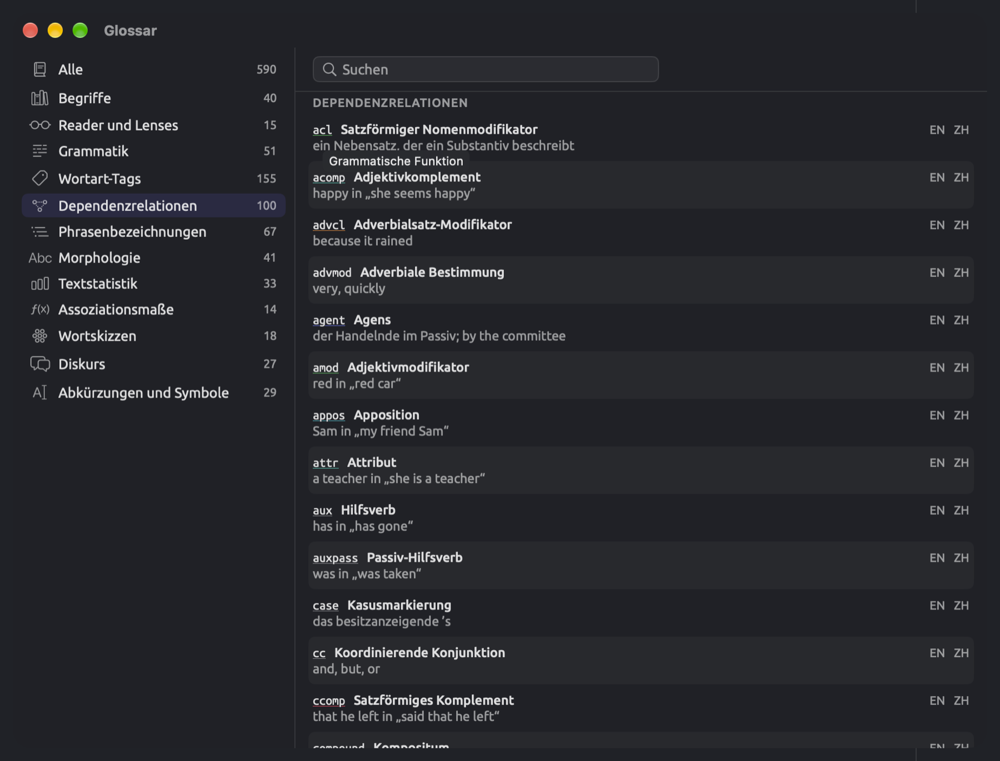
Kürzel, Namen und Definitionen lassen sich einzeln auswählen und mit ⌘C kopieren.
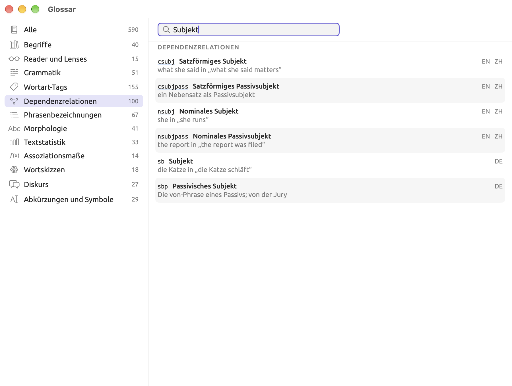
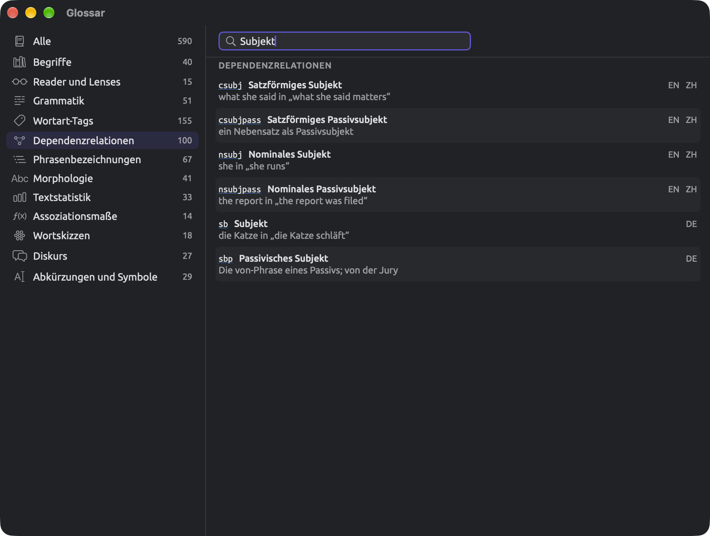
Feedback senden
Hilfe ▸ Feedback senden öffnet das Fenster, in dem Sie einen Fehlerbericht, einen Funktionswunsch oder eine Frage an den Entwickler verfassen. E-Mail verfassen macht aus Ihrem Text eine E-Mail an info@lemmaloom.app in Ihrem Mailprogramm.
Eine Nachricht schreiben
- Wählen Sie Hilfe ▸ Feedback senden.
- Klicken Sie oben im Fenster auf die Art der Nachricht (Fehlerbericht, Funktionswunsch, Frage oder Sonstige). Beim Öffnen des Fensters ist Fehlerbericht ausgewählt.
- Geben Sie Ihre Nachricht in das Feld unter Nachricht ein. Was hineingehört, beschreibt der Abschnitt Ein Problem hilfreich melden.
- Lassen Sie Systeminformationen einschließen ausgewählt, um die Angaben aus der Zeile darunter hinzuzufügen, oder heben Sie die Auswahl auf, um sie wegzulassen.
- Klicken Sie auf E-Mail verfassen.
- Hängen Sie in Ihrem Mailprogramm gegebenenfalls Bildschirmfotos an und senden Sie die E-Mail.
Das Fenster schließt sich, wenn Sie auf E-Mail verfassen oder Abbrechen klicken; beim nächsten Öffnen ist es leer. Wenn Sie nicht sicher sind, ob Ihr Mailprogramm richtig eingerichtet ist, kopieren Sie eine längere Nachricht (⌘A, dann ⌘C), bevor Sie auf E-Mail verfassen klicken.
Ist die Nachricht leer oder enthält sie nur Leerzeichen und Leerzeilen, ist E-Mail verfassen deaktiviert und zeigt den Tooltip Nachricht ist leer.
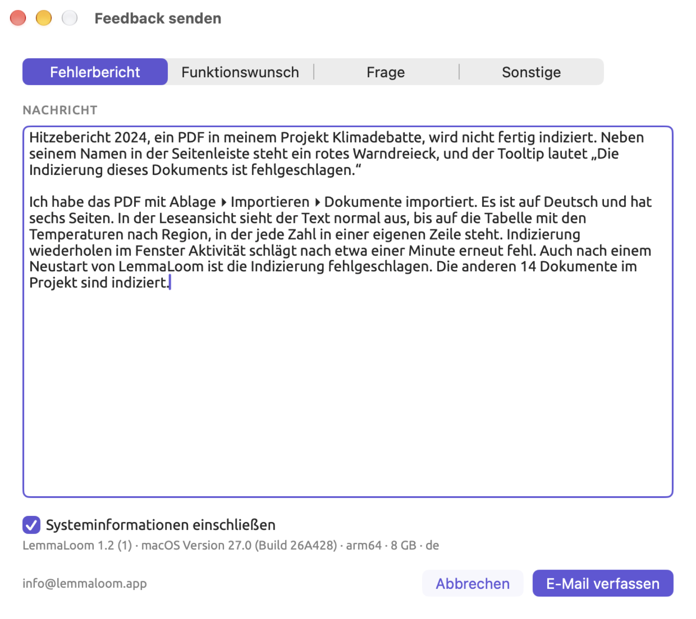

Was die E-Mail enthält
Die Betreffzeile gibt an, um welche Art von Nachricht es sich handelt.
| Art der Nachricht | Betreff der E-Mail |
|---|---|
| Fehlerbericht | LemmaLoom · Bug report |
| Funktionswunsch | LemmaLoom · Feature request |
| Frage | LemmaLoom · Question |
| Sonstige | LemmaLoom · Feedback |
Ist Systeminformationen einschließen ausgewählt, folgen unter Ihrer Nachricht eine Trennzeile (--) und vier Zeilen:
| Zeile | Beispiel | Bedeutung |
|---|---|---|
| 1 | LemmaLoom 1.2 (1) | Die Version von LemmaLoom, mit der Build-Nummer in Klammern |
| 2 | macOS Version 27.0 (Build 27A200) | Die Version von macOS |
| 3 | arm64 · 8 GB | Der Prozessortyp (arm64 für Apple Silicon, x86_64 für Intel) und der eingebaute Arbeitsspeicher des Mac |
| 4 | de | Die Sprache der Benutzeroberfläche (en, de oder zh-Hans) |
Das Fenster zeigt dieselben Angaben, allerdings in einer einzigen Zeile, durch Punkte getrennt. Wenn Sie die Auswahl des Markierungsfelds aufheben, wird die Zeile blasser.
LemmaLoom fügt nur die Trennzeile und diese Zeilen hinzu, und jede davon können Sie vor dem Senden aus dem Entwurf löschen.
Wenn sich das Mailprogramm nicht öffnet
E-Mail verfassen öffnet eine neue Nachricht im Standard-Mailprogramm Ihres Mac. Das Standard-Mailprogramm legen Sie in Mail fest, unter Mail ▸ Einstellungen …, Allgemein, im Menü Standardprogramm für E-Mails. Ist Mail Ihr Standard-Mailprogramm und dort noch kein Account eingerichtet, fordert Mail Sie auf, einen hinzuzufügen.
Wenn Sie E-Mails über einen Webmail-Dienst schreiben, kopieren Sie den Text Ihres Feedbacks aus dem Fenster Feedback senden (⌘A, dann ⌘C), öffnen bei Ihrem Webmail-Anbieter eine neue, leere E-Mail und setzen Ihr Feedback dort ein. Senden Sie die Nachricht dann an info@lemmaloom.app; die Adresse können Sie auch unten links im Fenster kopieren. Tippen Sie die Zeile mit den Systeminformationen so in die E-Mail ab, wie das Fenster sie zeigt.
Ein Problem hilfreich melden
Ein sehr hilfreicher Fehlerbericht enthält die genauen Schritte, die zu dem Problem geführt haben.
Bevor Sie schreiben
Oft löst ein kurzer Test Ihr Problem oder zeigt Ihnen zumindest, wo Sie suchen müssen:
- Halten Sie den Mauszeiger auf eine deaktivierte Schaltfläche. Gehört sie zu einem Fenster oder Dialog von LemmaLoom, erklärt ihr Tooltip, warum sie gerade nicht verfügbar ist (siehe Konventionen in Kapitel 1, Einführung). Meist muss der Befehl erst warten, bis etwas abgeschlossen ist, etwa die Indizierung des Dokuments.
- Schlägt die Indizierung eines Dokuments fehl, erscheint in der Seitenleiste neben dem Namen des Dokuments ein rotes Warndreieck. Halten Sie den Mauszeiger auf das Warndreieck, um das Problem zu sehen; danach können Sie mit der rechten Maustaste auf das Dokument klicken und Indizierung wiederholen wählen (siehe Wenn die Indizierung fehlschlägt in Kapitel 21, Analyse und Indizierung).
- Beenden Sie LemmaLoom vollständig, öffnen Sie es erneut und versuchen Sie die Aktion noch einmal.
- Führen Sie genau dieselben Schritte mit einem anderen Dokument aus oder in einem neuen Projekt mit nur einem kleinen Dokument. Tritt das Problem nur bei diesem einen Dokument auf, schreiben Sie das in Ihren Bericht.
- Prüfen Sie im App Store unter Updates, ob Sie die neueste Version von LemmaLoom verwenden.
Was in einen Bericht gehört
- Beschreiben Sie zuerst in einem Satz, was Sie erreichen wollten.
- Führen Sie dann die Aktionen, die zu dem Problem geführt haben, Schritt für Schritt auf, eine pro Zeile. Nennen Sie Menüs, Schaltflächen und Felder so, wie LemmaLoom sie bezeichnet.
- Schildern Sie, was Sie erwartet haben und was stattdessen geschehen ist.
- Geben Sie Fehlermeldungen wörtlich an, nach Möglichkeit kopiert, andernfalls abgetippt.
- Geben Sie an, ob das Problem jedes Mal oder gelegentlich auftritt oder nur ein einziges Mal aufgetreten ist.
- Nennen Sie außerdem die Art des Dokuments (Textdatei, PDF, Webseite oder Aufnahme), seine Sprache und ungefähre Länge sowie die Zahl der Dokumente in Ihrem Projekt.
- Fügen Sie auch die Systeminformationen bei, die Systeminformationen einschließen automatisch hinzufügt.
Für ein Bildschirmfoto eines ganzen Fensters drücken Sie ⇧⌘4, dann die Leertaste, und klicken auf das Fenster; das Bild wird automatisch auf dem Schreibtisch gesichert. ⇧⌘5 bietet weitere Optionen für Bildschirmfotos. Sobald die E-Mail in Ihrem Mailprogramm geöffnet ist, können Sie das Bildschirmfoto anhängen.
Ein Beispielbericht
Angenommen, die Indizierung des PDF „Hitzebericht 2024“ aus dem Projekt „Klimadebatte“ wird nicht abgeschlossen. So würde ein hilfreicher Fehlerbericht lauten:
„Hitzebericht 2024“, ein PDF-Dokument in meinem Projekt, wird nicht fertig indiziert. Neben seinem Namen in der Seitenleiste steht ein rotes Warndreieck, und sein Tooltip lautet „Die Indizierung dieses Dokuments ist fehlgeschlagen.“
Ich habe es mit Ablage ▸ Importieren ▸ Dokumente importiert. Es ist auf Deutsch und hat sechs Seiten. In der Leseansicht sieht alles normal aus, nur die Tabelle mit den regionalen Temperaturwerten erscheint als einzelne Zahlen, jede in einer eigenen Zeile. Ein erneuter Versuch mit Indizierung wiederholen im Fenster Aktivität ist nach etwa einer Minute ebenfalls fehlgeschlagen. Auch nach dem Beenden und Neustarten von LemmaLoom blieb das Ergebnis gleich. Die übrigen 14 Dokumente wurden alle erfolgreich indiziert.
Ich hatte erwartet, dass der Bericht wie die übrigen Dokumente in meinem Projekt indiziert wird. Ein Bildschirmfoto der Tabelle in der Leseansicht ist angehängt.
Unter der Nachricht zeigen vier Zeilen die Systeminformationen Ihres Mac.
Bei einem Bericht, in dem nur Die Indizierung funktioniert nicht steht, muss der Entwickler womöglich mehrmals nachfragen, bevor die eigentliche Arbeit beginnen kann. Dieses Beispiel dagegen nennt, was bereits getestet wurde, und erwähnt, dass die übrigen Dokumente erfolgreich indiziert sind. Daran erkennt der Entwickler, dass das Problem nur bei der Indizierung dieses einen PDF-Dokuments auftritt.
Wenn LemmaLoom unerwartet beendet wird
Stürzt eine App unerwartet ab, zeigt macOS ein Fenster für den Absturzbericht. Es enthält neben einer Beschreibung des Problems die Schaltfläche Bericht …. Ein Bericht, den Sie über diese Schaltfläche senden, geht an Apple und wird nur dann an den Entwickler weitergeleitet, wenn Sie die Option Mit App-Entwicklern teilen unter Systemeinstellungen ▸ Datenschutz & Sicherheit ▸ Analyse & Verbesserungen aktiviert haben.
Sie können den Bericht aber auch selbst senden:
- Klicken Sie in der Meldung auf Bericht ….
- Wählen Sie den Text des Berichts aus und kopieren Sie ihn (⌘C).
- Öffnen Sie LemmaLoom erneut und wählen Sie Hilfe ▸ Feedback senden.
- Setzen Sie den Bericht in das Nachrichtenfeld ein.
- Schreiben Sie oberhalb des Berichts ein paar Zeilen dazu, was Sie getan haben, kurz bevor LemmaLoom beendet wurde. Ein Absturzbericht zeigt, an welcher Stelle im Programm der Absturz geschah; Ihre Zeilen ergänzen, welches Dokument oder welchen Befehl Sie gerade verwendet haben.
Stürzt LemmaLoom gleich beim nächsten Start wieder ab, kopieren Sie den Bericht und senden Sie ihn per E-Mail an info@lemmaloom.app. Wenn Sie frühere Absturzberichte von LemmaLoom anhängen möchten, öffnen Sie die App „Konsole“ (im Ordner „Dienstprogramme“ innerhalb des Ordners „Programme“) und suchen Sie dort unter Absturzberichte.
Funktionswünsche und Fragen
Beschreiben Sie in einem Funktionswunsch Ihr Forschungsanliegen statt des Bedienelements, das Ihnen vorschwebt. Schreiben Sie, mit welchem Material Sie arbeiten, was darin gefunden, gezählt oder verglichen werden soll und was mit dem Ergebnis geschehen soll. Stützt sich Ihr Wunsch auf eine bestimmte Methode aus der Fachliteratur, geben Sie eine Quelle dafür an. In der Softwareentwicklung nennt man das eine User Story, eine Erzählung aus der Sicht des Nutzers, die beschreibt, was er tun möchte. Ein Entwickler kann die User Story dann in technische Anforderungen und einen Entwicklungsplan überführen, sodass Sie sich um technische Einzelheiten nicht sorgen müssen.
Über LemmaLoom
Um die Versionsnummer von LemmaLoom, den Text für eine Literaturangabe und die Lizenzen der Komponenten nachzusehen, wählen Sie LemmaLoom ▸ Über LemmaLoom. Das Fenster beginnt mit dem Namen LemmaLoom, gefolgt von der Version (etwa Version 1.2 (1)). Zuerst steht die Versionsnummer; sie stimmt mit der Angabe im App Store überein. Danach folgt in Klammern die Build-Nummer.
Darauf folgen Angaben zum Entwickler, das Copyright und eine Zeile mit besonderem Dank. Als Nächstes kommt Trinkgeld für den Entwickler; ein Klick auf diesen Link öffnet ein Fenster, in dem Sie über den App Store ein Trinkgeld geben können. Danach folgt LemmaLoom zitieren mit Literaturangaben in zwei Zitierstilen. Lizenzen führt alle Komponenten, die LemmaLoom verwendet, mit ihren Lizenzen auf.
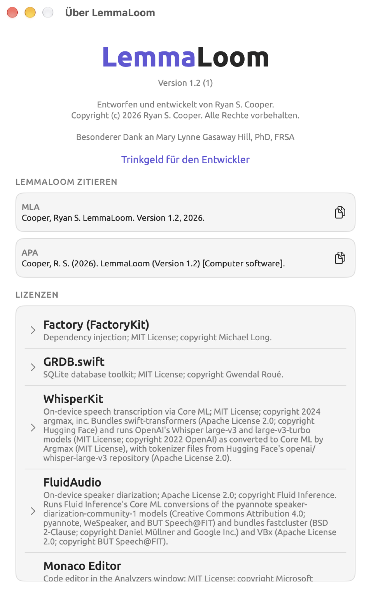
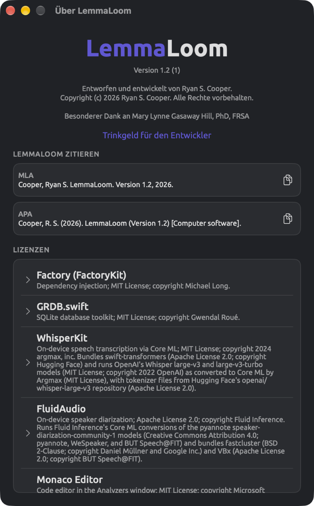
LemmaLoom zitieren
LemmaLoom zitieren erstellt Literaturangaben in zwei Stilen.
| Stil | Was die Literaturangabe enthält |
|---|---|
| MLA | Der Name des Entwicklers, Nachname zuerst; der Titel, LemmaLoom; die Version; das Jahr |
| APA | Nachname und Initialen des Entwicklers; das Jahr in Klammern; der Titel, mit der Version in Klammern; die Beschreibung [Computer software] |
Um eine Literaturangabe zu kopieren, klicken Sie auf die Schaltfläche daneben, die wie zwei überlappende Blätter aussieht. Sie können auch die Literaturangabe selbst auswählen und den ausgewählten Text mit ⌘C kopieren. Beim Kopieren zeigen diese Schaltflächen kurz ein Häkchen.
Die Literaturangabe enthält das aktuelle Jahr laut der Uhr Ihres Mac. Unabhängig von der Sprache der Benutzeroberfläche sind Literaturangaben immer englisch.
Lizenzen
Lizenzen führt die Programmbibliotheken, Modelle, Sprachdaten und die Schrift auf, die LemmaLoom enthält. Jeder Eintrag nennt einen Namen und eine Beschreibung, die den Lizenzvertrag und in den meisten Fällen den Inhaber des Copyrights angibt. Namen, Beschreibungen und Lizenztexte sind unabhängig von der Sprache der Benutzeroberfläche immer englisch. Ein Klick auf einen Eintrag zeigt den vollständigen Text der Lizenz oder Lizenzen; ein weiterer Klick blendet ihn wieder aus. Den Text der Lizenzen können Sie auswählen und kopieren.
Einträge, die auf (data) enden, bedeuten, dass nur Daten aus dem jeweiligen Projekt verwendet wurden, kein Code, etwa trainierte Modelle oder Tabellen mit Wortformen.
Die Einträge nennen auch die Modelle für Transkription, Sprechertrennung und Grammatikanalyse sowie deren Urheber.
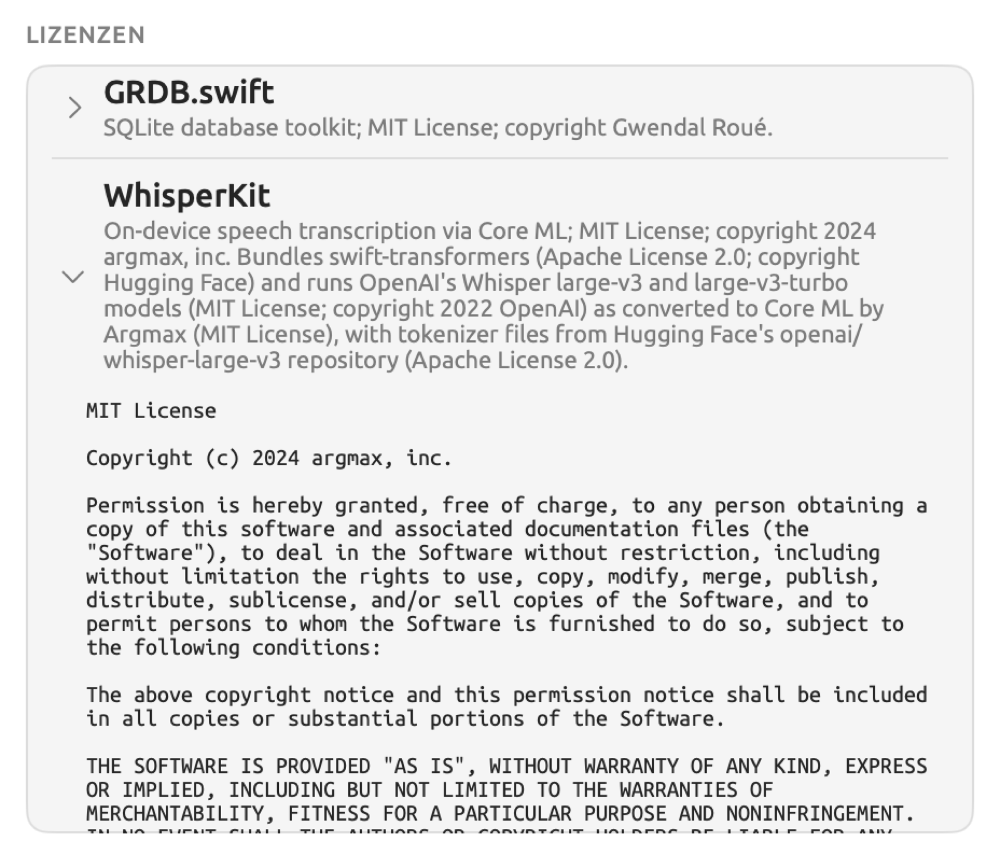
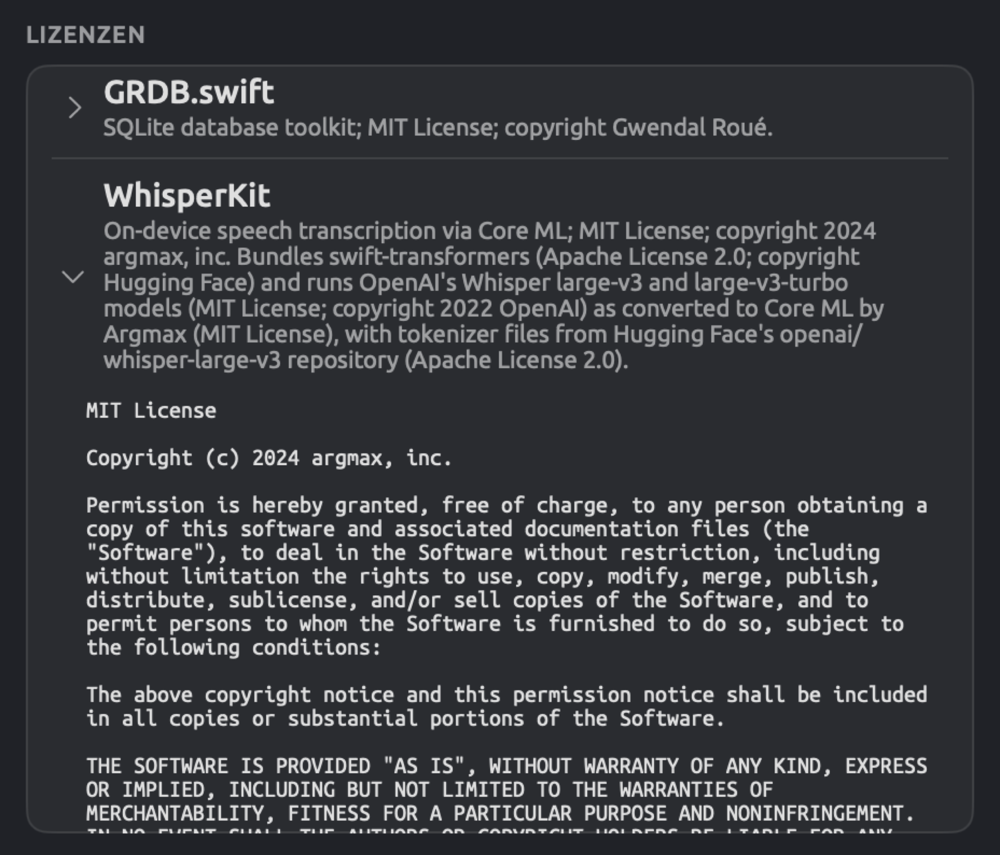